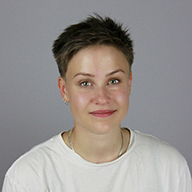
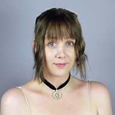
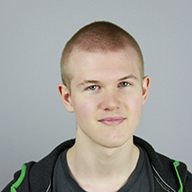
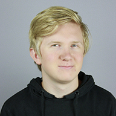
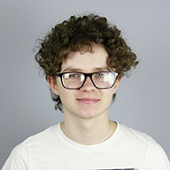
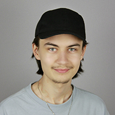
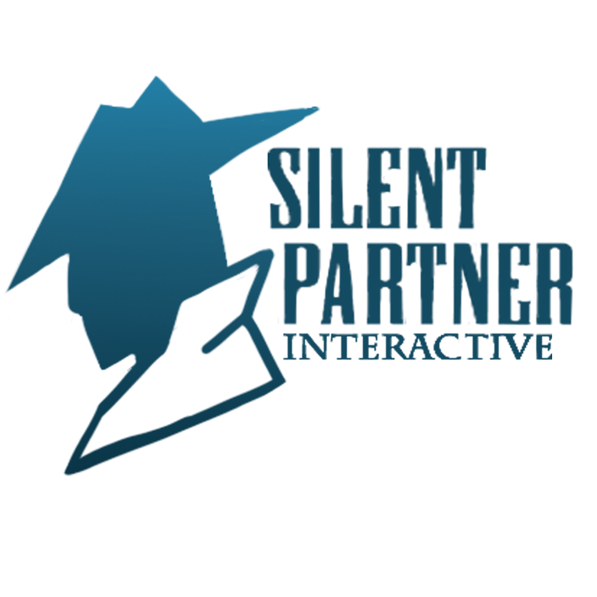

Stealth Horror Thievery Game
Project Summary
Burglar is a VR stealth and thievery game with horror elements. As a novice
burglar, your task is to break into homes to liberate as many goods as possible without getting caught,
and try to escape with your freedom (and life)!
With this game, we wanted to leverage the immersion and emotion that comes with the VR platform and use it to elevate
the player's experience. A big part of the game is in the atmosphere and environment which our team spent
a lot of our time getting just right.
Project Breakdown
9 Week Group Project
18 Team Members
Powered by Unreal Engine 5
Platforms: PSVR2

My Responsibilities
UX and UI Design: crafting functional, immersive and engaging user interfaces for a seamless player experience.
Implementation: responsible for programming and implementing interactive gameplay elements.
My Contributions
The journey of this nine-week game project turned out to be as much a test of effective collaboration as it was about creating an immersive gaming experience. With a team size much larger than what any of us were used to, we had to put more focus on efficient communication and teamwork. It was difficult at times, but we managed to pull together and create a game I feel proud to have been a part of.
User Experience and User Interface Design
My main responsibility was designing and implementing the User Interface.
Note that I'm going to lump UX in with UI as I worked with both fluidly. Yes, they are different
disciplines, yes I'll do it anyway.
A couple of specific principles dictated my choices for the UI.
- First off, I decided that I wanted it to be diegetic. As diegetic as I could make it.
- Second, I wanted to minimize clutter in the UI as much as possible.
So why make it diegetic? Well, interacting with a physical object rather than some weird floating text
boxes tends to feel more natural in a VR environment. Not only can this help reduce motion sickness,
it also adds to the immersion of the game.
Alright, but what do I mean by "minimize clutter"? By clutter I mean disorganized and/or overcomplicated UI.
It can be confusing and overwhelming for the player if too much information is displayed in one space.
But, it can also be irritating if the UI isn't easily accessible when the player needs it. This can turn out
to be a bit of a balancing act, where readability and conciseness often compete with comprehensiveness.
I chose to combine the Menus and the Mission Information UI into a physical object that the player always
carries with them, a Clipboard. Everything that the player could need on the fly is centralized in this single
location. This way, the player has only a single object they need to keep track of for the most important UI,
and it's always right on their person when they need it. I chose specifically a Clipboard because it makes intuitive
sense for important information to be on them. This worked out well as all our playtesters instinctively referred to
it for menus and information even without being prompted to.
Actually creating the Clipboard, which I wanted to behave like an actual clipboard, presented some challenges.
To keep it looking as natural as possible, I wanted the pages to flip and contort like paper would.
In order to interact with the UI, I would need a Widget (Unreal's UI elements) to lay against the page of the clipboard.
The page serves as a backdrop, and the Widget allows us to interact, so we now have a menu on a clipboard, right?
Well, yes, but actually no. Since Widgets are projected on a flat plane, the widget cannot contort with our pages
as they bend and flip over. Widgets just don't bend like that. But I need the widgets, because a regular mesh (like a page)
can't be interacted with like UI. And if I just remove the Widget when the page turns, then the page will turn white as it flips.
Not very realistic, is it? I needed the visuals of the Widget to stay on the page even as the page turned over.
I looked around online for a few days but could not find any methods for how to accomplish this. I don't know, maybe
I'm the first to ever have this issue. My solution was to utilize something called SceneCaptureComponents and RenderTargets
alongside Dynamic Materials. Right above my page I put a WidgetComponent, the actual UI itself. Above it, a SceneCaptureComponent2D
sits in wait for a signal. As I flip the page, the SceneCapture takes a picture of the Widget. This picture is broadcast to a
RenderTarget2D, basically storing the visual information of the UI. I pass this RenderTarget's texture to a Dynamic Material
which I can apply to the page's mesh. I can then safely remove the Widget, and the page will look identical.
In summary; I take a photo of the UI and stick that onto the page as it flips, thus making it look like the UI contorts.
I worked closely with artist (and part-time speed demon) Felicia to create all the functional elements such as the meshes and
animations needed for the clipboard, as my technique requires very exact tolerances. We also worked together to make the
icons for the UI.
Designing and programming the clipboard UI was an iterative and arduous process, spanning nearly the entire project.
It was a fun learning experience and I'm proud of the end result.
Project Coordination
As one of the main coordinators in the team, I helped direct the workflow, ensuring our efforts were organized and productive. I helped our code wizard Casper in handling any technical issues we faced with Unreal, as well as designing and programming a comprehensive save system. This role allowed me to balance resources, manage timelines, and harmonize our efforts.
Testing and Debugging
The task of spotting and fixing bugs, ensuring that our final product was as smooth and immersive as possible, was a responsibility I embraced. From coordinating playtesting sessions to refining the logic for saving and loading game data, these behind-the-scenes contributions were essential in enhancing the game's overall quality.
Sound Design and Game Environment Enhancement
When a team member was absent for a long period of time, I had to fill in by working with and implementing sound into the game. This role stretched my skills and allowed me to add another layer of life to our game. It was a fun change of pace from what I had been doing. I worked on the dynamic walking sounds, the overall sound environment, and also designed and created a hub area for the player.
Project Completion
In the final stages of our project, I developed a system for unlockable cosmetics and a hover display system for enhanced UI interaction. My focus also involved refining the puzzles and win/lose conditions, ensuring they were engaging and well-defined. There were quite a few late nights, but it was a lot of fun.
Conclusion
Throughout this nine-week project, I had the privilege of wearing many hats and contributing to various aspects of our game. The responsibilities I undertook were as much about the collective effort as my individual role. Having to step in and help wherever we faced difficulties, I am grateful for the many opportunities to learn and the opportunity to contribute in meaningful ways. The pride I feel is not just for the tasks I accomplished but more so for the successful result of our teamwork and the rewarding journey we navigated together.
Read More!My Team
Through this nine week project I had the honor of working alongside the wonderful team Silent Partner Interactive (SPI), a group of 14
other students from PSQ and 3 Sound and Media students from Högskolan Dalarna. I could not be more proud of what we managed to accomplish together,
and I couldn't have asked for better teammates to experience this game project with.
For their hard work and their commitment, I am truly grateful. The game wouldn't have been anywhere near what it is today without it.
I cannot thank all of them enough for the nine weeks we had together; it was a truly wonderful experience even through the ups and downs.
In spite of the bugs, the crashing packages (%#¤%@!) and broken navmesh's, we delivered a really freakin' solid game.
And of that, I am proud.
In fighting through the high amount of absences that we unfortunately had to deal with, those that were present showed tremendous heart and effort.
Even though it was difficult, and even though it was unfair, the team pushed through together and worked tirelessly to create the best game we could.
I remember one time, in particular, when we were very stressed for time and my office neighbour Melinda was busy implementing sounds. Suddenly,
she put her hands in her face before looking to me with a panicked expression. The sound effects had all started making strange noises!
They sounded muffled and they were crackling! I scooted over to her and tried her headset on; and she was right! Something sounded very off.
When I went back to my computer to check if the issue was present in my version of the project too, everything sounded perfectly fine on my end.
Melinda feared she would have to reimplement all the sound effects, which would take several hours. Things were not looking good.
After some more panic, Melinda realised what the issue was. She hadn't plugged her headphones in properly.
That was the only reason that the sound effects were strange.
In a mixture of embarrassment and relief, she cried for a couple of seconds before we both burst out laughing.
There were some moments like those, where it felt like the team was actually more like a family. I cannot express enough how much
I appreciate everybody's hard work. Their unwavering support, endless creativity, and unyielding work ethic helped shape Burglar
into the experience it is today.
While the completion of the game marked the end of an intense journey, it was also the start of countless new ones.
I am proud of what we have accomplished and looking forward to our next adventures.
The other members of the team:

Melinda Emanuelsson
Kevin Buda Andersson

Emma Tethrain

Casper Juvas

Viktor Niemelä

David Bern

Dennis Löv

Lucas Andersson Lundvik

Felicia Lindgren
Loke Öhrström
Wille Evensson

Ellinor Levin

Oskar Lindahl
Theodor Fransson
